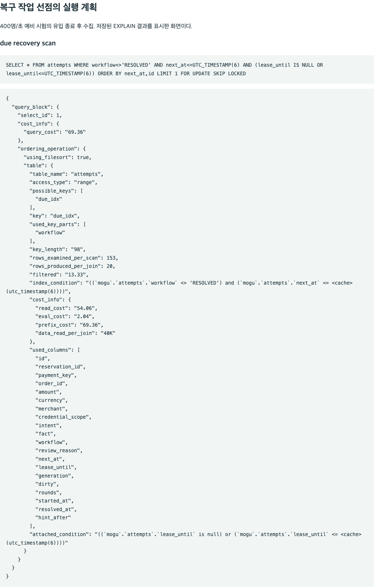
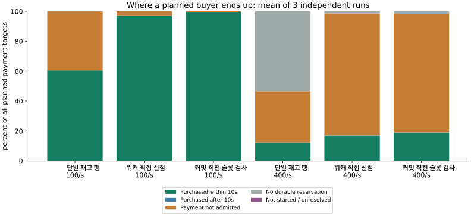
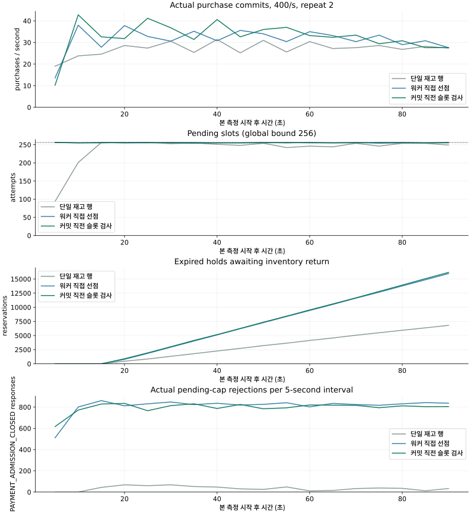
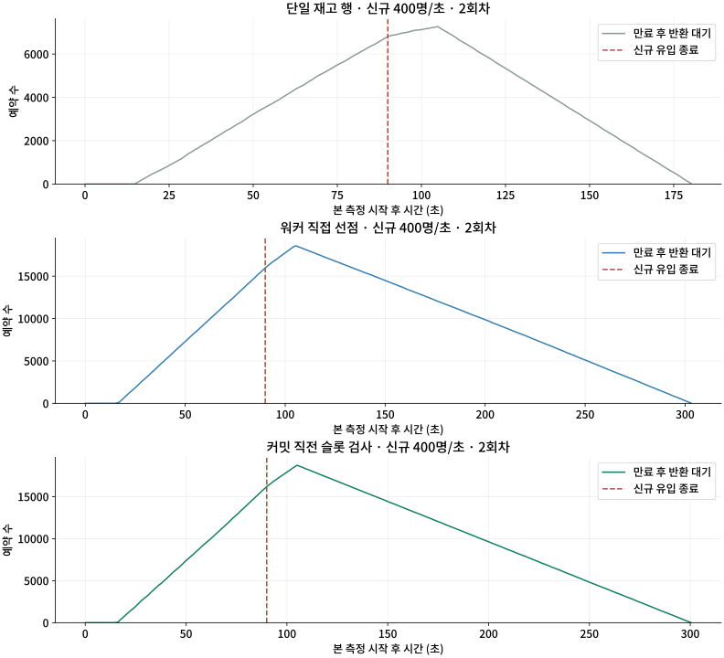
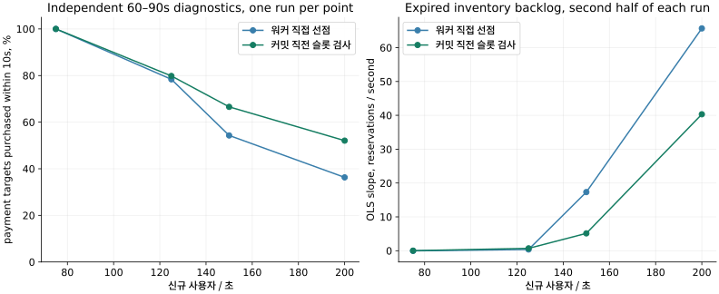
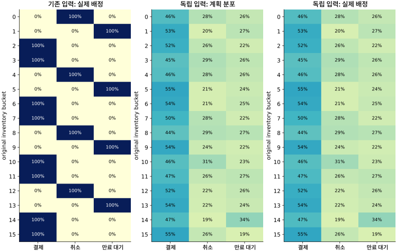

PURCHASE OUTCOMES / CONTENTION / DURABILITY
결제 슬롯 포화의 원인과 트랜잭션 구조 비교
모구시장은 한정 재고를 예약하고 외부 PG 승인을 확인한 뒤 구매를 확정한다. 예약을 많이 받아도 결제 슬롯을 오래 점유하면 이미 예약한 사용자의 결제가 거절되고, 해당 예약이 만료될 때까지 재고를 점유하는 비용도 남는다. 따라서 이 글에서는 수락률보다 같은 기한 안의 구매 결과와 전체 자원 비용을 중심으로 구조를 비교한다.
혼합 부하의 유입률은 신규 사용자 수를 뜻하며, 각 사용자의 예약 후 행동은 결제 50%·취소 25%·만료 대기 25%로 배정했다. 90초 입력에서 결제 대상은 100명/초일 때 4,500명, 400명/초일 때 18,000명이다. 클라이언트는 결제 접수를 한 번 요청하며 서버의 PG 조회·승인 복구 재시도는 별도로 유지한다.
미확정 결제 상한을 커밋 직전에 검사하는 대안은 정확성 수정 후 워커 직접 선점 구조보다 400건/초의 기한 내 구매 성공률이 1.124배 높았지만, 성공률·꼬리 지연·CPU·최종 미해결 수를 함께 평가한 사전 채택 조건에는 미달했다. 두 구조 모두 400건/초에서 과부하였으므로 아래 결과는 해당 로컬 환경의 비교로 한정하며, 조건별 판정은 원본에 연결했다. 선택 판정 원본
결제 슬롯 포화와 카운터 행 잠금 대기의 분리
워커 직접 선점의 독립 400 pilot에서는 예약을 393.6/s로 수락했지만 측정 창의 구매는 33.64/s에 그쳐, 재고 예약을 받는 속도보다 접수한 결제가 슬롯을 반환하는 속도가 문제였다. 결제 대상 5000명 중 78명은 예약을 얻지 못했고 3825명은 결제가 접수되지 않아, 10초 내 구매한 사용자는 1097명이었다. 수락한 결제의 슬롯 점유p50은 6.411초였고, 초기 실행 대기p50 3.015초와 PG 승인 후 내부 확정p50 2.858초가 컸다. 반면 PG 효과 적용은 약 0.7초였으며, 이 분위수들은 서로 다른 분포에서 구한 값이므로 합산하지 않았다. 400 독립 진단 원본.
미확정 결제 수인 pending을 증가시키는 조건부 UPDATE가 0행을 변경하면 실제 결제 상한에 도달한 것이다. 이 SQL의 timer에는 실행과 잠금 대기가 함께 들어 있어 순수 잠금 시간은 data_lock_waits로 별도 확인했다. 표본을 적분한 budgets 대기는 61.80 waiter-second였으며, 별도로 집계한 워커의 claim·arm·apply·finish DB 단계 합계는 약 74.92초로 PG HTTP 합계 7.92초보다 컸다. 이 단계들과 중첩되는 transaction/budget timer는 다시 더하지 않았다. 선점 실행 계획은 due_idx 범위와 filesort를 사용했고, SQL 전체에서는 COMMIT 비용이 컸다. 이 관측에서 커넥션 풀 확대나 GC 옵션 변경을 우선할 근거는 없었다.
SQL started_at과 resolved_at의 차이는 슬롯 점유의 근사값이지만, 두 시각 모두 트랜잭션 내부에서 기록되므로 예산 변경이 보이는 시점과 COMMIT 꼬리 시간을 정확히 분리하지는 못한다. 따라서 실시간 전역 pending 값과 full 응답을 별도로 관측하고, 최종 구매 창·고객 기한·CPU 분모는 앞서 설명한 afterCommit 시각으로 계산했다.
결제를 빠르게 거절해도 이미 예약한 재고의 점유 비용은 남았다. 측정 시작 후 5초 안에 미확정 결제가 256건에 도달한 뒤에도 신규 예약은 계속 수락됐고, 결제 접수를 거절당한 예약은 HELD에 남아 15초 TTL 이후에도 반환을 기다렸다. 만료 반환 p99는 46.488초였으며 유입 종료 뒤 약 59초의 추가 관찰이 필요했다. 따라서 결제 API의 응답 지연만으로 과부하 제어를 평가할 수 없고, 미접수 예약의 전체 점유 시간과 만료 후 반환 지연도 비용에 포함해야 했다.

잠금 분리와 커밋 감소가 각각 실패한 이유
| 실제 구현 | 가설과 pilot400 관측 | 판단 |
|---|---|---|
| 결제·웹훅 카운터 행 분리 | pending과 inbox를 서로 다른 budgets 행으로 분리. waiter61.80→25.56s, 기한 내 구매 1097→1107. | 잠금 감소는 확인했지만 구매 증가 0.9%로 사전 15% 기준 미달. 별도 이력 보존. |
| 관측·일정 트랜잭션 통합 | 관측 반영과 일정 갱신을 한 트랜잭션으로 통합. 기한 내 구매 1060, budget waiter103.31s. | 예산 해제 후에도 남은 SQL 동안 같은 행을 잡아 역효과. 단독 후보 기각. |
| 커밋 직전 슬롯 검사 | 관측 반영·일정 갱신을 통합한 트랜잭션에서 슬롯 카운터 변경을 beforeCommit으로 이동. pilot 기한 내 1295, waiter8.60s, 같은 창 CPU/1000구매 237.68s. | 탐색 조건 충족 후 본 반복으로 재검증. 효과를 단순 합산하지 않음. |
카운터 행 분리와 트랜잭션 통합 대안에도 실제 MySQL·HTTP PG 회귀, 동일 입력의 100/400건·초 예비 시험을 수행했다. 각 1회의 짧은 실행으로 후보를 좁힌 뒤 최종 채택 여부는 아래 독립 3회 비교로 판단했다. 실패한 통합 대안의 실행 원본도 함께 남겼다. 잠금 분리 · 통합만 적용한 실패 · 말미 검사 통합 후보
BEGIN
lock request → user guard → reservation / attempt
validate and write business state / operation / response record
beforeCommit:
UPDATE budgets SET pending=pending+1
WHERE id=1 AND pending<256;
if updated_rows != 1: throw → ROLLBACK all writes
COMMIT
return 202
worker: claim committed attempt → durable command permission
COMMIT → external HTTP → observation + schedule transaction
pending decrement is also the final budget write before COMMIT입장·종결·inbox 한도를 동일 DB의 동일 전역 행으로 유지하고, 예산 수나 worker 수도 늘리지 않았다. admission에 실패하면 앞에서 준비한 attempt·operation·예약 상태·멱등 응답까지 롤백하며, commit 전 작업은 다른 worker에게 보이지 않고 202도 반환하지 않는다. 이 방식으로 계약을 유지할 수 있지만, 상한이 이미 찼을 때 먼저 수행한 쓰기가 낭비되는 비용은 남는다. HELD는 재고 예약이며 즉시 결제 슬롯까지 보장하지 않는 기존 계약을 유지했다. 예약 단계에서 결제 여력까지 확보하는 정책은 이후 결제자의 거절을 줄일 수 있지만 취소·만료 사용자도 슬롯을 잡아 예약 수락률을 낮추는 다른 계약이다. 이번에 구현한 동일 계약 대안으로 계산하지 않았다. 잠금 범위 단축과 이 추가 작업의 교환을 CPU·I/O·구매 결과로 평가한다.
동일 소스·입력의 독립 3회 비교
각 조건은 재고 2,000,000개를 가진 단일 인기 회차이며 사용자당 수량 1·한 건의 활성 예약/구매 제약을 적용한다. 후보는 같은 DB 안의 16개 버킷을 사용하며, 단일 행 기준은 하나의 재고 행을 사용한다. 버킷 구조에서는 각 inventory_buckets.available이 재고의 권위이며 sales.available은 배정 계산에 사용하지 않는다. 각 조건에서 10/s로 20초간 워밍업하고 5초 간격을 둔 뒤 90초간 본 측정을 수행했다. 이때 100과 400은 DB·PG를 각각 초기화한 독립 실행이므로 단계형 적체를 물려받지 않는다. seed41001~41003을 후보별로 맞추고 반복 순서를 교대했다. 동일 한 노트북에서 DB2CPU/1GiB, JVM heap384MiB·ActiveProcessorCount2, pool48, PG worker4, pending256을 사용했다. JVM 옵션은 전용 코어 할당이 아니다. 단일 행 기준 admission6과 두 후보 24는 기존 각 구조의 튜닝값이며 서버 전체 자원 예산은 동일하다. 단일 행 기준의 6은 선행 예약 경로의 튜닝값으로, 혼합 부하에서도 최적임을 입증한 것은 아니다. 단일 행 기준→후보 차이를 구조 하나의 순수 효과로 해석하지 않고, 이번 채택 판정은 admission 24까지 동일한 워커 직접 선점과 커밋 직전 슬롯 검사 사이에서 내린다.
기본 inbox 한도 10000은 완료된 이벤트도 계속 세어 90초·400/s의 정상 알림을 끝까지 보관할 수 없으므로, 모든 비교군의 누적 보관 한도를 공통 100000으로 설정했다. 이 보관 한도 변경은 후보의 성능 개선으로 계산하지 않았다. 실제 PG에는 부하를 보내지 않았다. PG 효과 지연 0.3~1.0초, 응답 유실 20%, 알림 유실 20%는 독립 stream이다. 설정된 확률과 실제 유한 입력의 분포는 각input-audit에서 구분한다.
20초 저부하 워밍업을 측정 구간과 분리했지만, 이 시간만으로 JVM과 캐시가 충분히 안정화됐는지는 확인하지 못했다. 반복 순서는 정방향·역방향·정방향으로 교대했으며 모든 순서를 균형 있게 배치하지는 않았다. 공유 호스트의 변동과 함께 비교의 한계로 남는다.



| 입력/s | 구조 | 10초 내 구매 / 계획 결제 대상 | 기한 내 성공률 | 창 안 구매/s | 성공 p99 s |
|---|---|---|---|---|---|
| 100 | 단일 재고 행 | 2,813/4,500 2,733/4,500 2,635/4,500 | 60.60 [58.56–62.51]% | 27.45 [26.42–28.41] | 9.278 [8.853–9.763] |
| 100 | 워커 직접 선점 | 4,500/4,500 4,207/4,500 4,384/4,500 | 96.97 [93.49–100.00]% | 46.31 [43.94–49.12] | 5.536 [2.721–7.033] |
| 100 | 커밋 직전 슬롯 검사 | 4,500/4,500 4,500/4,500 4,430/4,500 | 99.48 [98.44–100.00]% | 48.24 [46.37–49.20] | 3.900 [2.444–6.451] |
| 400 | 단일 재고 행 | 2,551/18,000 2,696/18,000 1,442/18,000 | 12.39 [8.01–14.98]% | 23.32 [15.81–27.16] | 6.831 [2.056–9.229] |
| 400 | 워커 직접 선점 | 3,035/18,000 3,086/18,000 3,022/18,000 | 16.93 [16.79–17.14]% | 31.51 [30.87–32.21] | 9.645 [9.331–10.219] |
| 400 | 커밋 직전 슬롯 검사 | 3,722/18,000 3,139/18,000 3,416/18,000 | 19.03 [17.44–20.68]% | 35.42 [32.63–38.51] | 9.086 [8.007–10.098] |
| 조건 | CPU s / 구매 1000건 | 만료 반환 p99 s | 유입 종료 후 관찰 s | 최종미확정 결제 / HELD |
|---|---|---|---|---|
| 100 / 단일 행 기준 | 147.1 [136.0–157.5] | 0.36 [0.30–0.45] | 15.6 [15.5–15.7] | [0, 0, 0] / [0, 0, 0] |
| 100 / 워커 직접 선점 | 127.6 [116.0–136.0] | 0.28 [0.25–0.31] | 15.6 [15.6–15.7] | [0, 0, 0] / [0, 0, 0] |
| 100 / 커밋 직전 슬롯 검사 | 124.1 [106.0–136.6] | 0.27 [0.25–0.29] | 15.6 [15.5–15.7] | [0, 0, 0] / [0, 0, 0] |
| 400 / 단일 행 기준 | 263.0 [220.6–338.7] | 72.31 [67.25–75.23] | 88.0 [83.2–90.5] | [0, 0, 0] / [0, 0, 0] |
| 400 / 워커 직접 선점 | 332.9 [329.6–335.8] | 194.71 [191.41–196.67] | 211.9 [208.8–213.9] | [0, 0, 0] / [0, 0, 0] |
| 400 / 커밋 직전 슬롯 검사 | 309.4 [276.4–345.8] | 190.37 [186.75–194.03] | 207.5 [203.9–210.9] | [0, 0, 0] / [0, 0, 0] |
슬롯 점유와 실행 대기: 반복별 중앙값의 평균
| 조건 | 슬롯 점유 | 첫 실행 대기 | ARMED→PG효과 | PG효과→구매 | budget 잠금 대기 | 실제 full 응답 |
|---|---|---|---|---|---|---|
| 100 / 단일 행 기준 | 8.978 [8.709–9.250] | 4.235 [4.100–4.378] | 0.693 [0.664–0.708] | 4.037 [3.887–4.205] | 3.1 [2.1–4.1] | [1687, 1767, 1863] |
| 100 / 워커 직접 선점 | 2.270 [1.289–3.776] | 0.876 [0.365–1.668] | 0.686 [0.645–0.708] | 0.854 [0.388–1.550] | 9.7 [8.3–10.7] | [0, 293, 116] |
| 100 / 커밋 직전 슬롯 검사 | 1.519 [1.148–1.911] | 0.457 [0.261–0.632] | 0.686 [0.650–0.706] | 0.465 [0.333–0.663] | 6.0 [2.1–9.5] | [0, 0, 70] |
| 400 / 단일 행 기준 | 6.466 [1.664–8.934] | 2.795 [0.056–4.204] | 0.687 [0.647–0.710] | 2.841 [0.668–3.984] | 1.4 [1.0–2.1] | [249, 619, 0] |
| 400 / 워커 직접 선점 | 7.843 [7.349–8.169] | 3.690 [3.465–3.819] | 0.711 [0.709–0.711] | 3.576 [3.373–3.722] | 165.4 [150.6–189.0] | [14592, 14602, 14454] |
| 400 / 커밋 직전 슬롯 검사 | 7.275 [6.635–7.823] | 3.447 [3.210–3.695] | 0.712 [0.711–0.715] | 3.291 [3.016–3.554] | 65.9 [39.3–104.8] | [13932, 14331, 14299] |
전체 호스트 CPU와 같은 시간창의 구매 분모
| 조건 | 관찰창 s | 전체 호스트 CPU s | 같은 창의 구매 수 |
|---|---|---|---|
| 100 / 단일 행 기준 | 130.4 [129.9–130.7] | 415.6 [396.3–446.2] | 2827.0 [2735.0–2913.0] |
| 100 / 워커 직접 선점 | 130.1 [129.7–130.4] | 568.8 [533.5–609.8] | 4463.7 [4307.0–4600.0] |
| 100 / 커밋 직전 슬롯 검사 | 130.1 [129.8–130.4] | 567.6 [487.8–628.5] | 4576.7 [4530.0–4600.0] |
| 400 / 단일 행 기준 | 202.9 [197.9–205.3] | 582.7 [522.3–616.9] | 2329.7 [1542.0–2796.0] |
| 400 / 워커 직접 선점 | 326.2 [323.5–328.1] | 1062.9 [1050.8–1085.5] | 3192.7 [3135.0–3255.0] |
| 400 / 커밋 직전 슬롯 검사 | 322.2 [318.8–325.5] | 1090.6 [1056.5–1139.1] | 3544.3 [3294.0–3822.0] |
전체 결제 대상의 단계별 통과 건수
| 조건 | 전체 대상 | 예약 확보 | 결제 접수 | 10초 내 PG 승인 | 10초 내 구매 | 최종 PG 승인 / 구매 |
|---|---|---|---|---|---|---|
| 100 / 단일 행 기준 | 13,500 | 13,498 | 8,181 | 8,181 | 8,181 | 8,181 / 8,181 |
| 100 / 워커 직접 선점 | 13,500 | 13,500 | 13,091 | 13,091 | 13,091 | 13,091 / 13,091 |
| 100 / 커밋 직전 슬롯 검사 | 13,500 | 13,500 | 13,430 | 13,430 | 13,430 | 13,430 / 13,430 |
| 400 / 단일 행 기준 | 54,000 | 25,176 | 6,689 | 6,689 | 6,689 | 6,689 / 6,689 |
| 400 / 워커 직접 선점 | 54,000 | 53,230 | 9,278 | 9,278 | 9,143 | 9,278 / 9,278 |
| 400 / 커밋 직전 슬롯 검사 | 54,000 | 53,164 | 10,333 | 10,333 | 10,277 | 10,333 / 10,333 |
단일 행 기준의 400건/초 3회차는 성공 거래의 p99가 2.056초였지만 구매 수는 1,442/18,000건이었다. 10,820명은 재고 예약을 얻지 못했고 5,738명은 전역 HTTP 입장 제한 OVERLOADED로 결제가 접수되지 않았다. pending 표본 최댓값은 35건에 그친 반면 sales 행의 대기는 약 408 waiter-second, budgets는 약 1 waiter-second였다. 결제 슬롯 256개가 차기 전에 재고 행 경합과 HTTP 입장 제한이 요청을 막은 실행이다. 성공 거래의 짧은 p99만으로는 이 손실을 알 수 없어 전체 결제 대상의 결과를 함께 비교했다. 전체 결제 대상과 응답 분류
워커 직접 선점의 100/s 반복 2에서는 약 50초부터 슬롯이 253~256개로 차면서 4,500건 중 4,207건만 기한 내 구매하고 293건은 결제가 접수되지 않았다. 이 불리한 반복도 제외하지 않고 원인을 살펴보니 COMMIT 평균은 2.511ms로 반복 1의 1.236ms보다 높았고, pool 대기 peak 0·DB throttle 0·GC pause 합계 0.226초였다. 커밋 비용과 내부 대기 증가가 관찰됐지만 이를 특정 디스크나 열 문제의 인과로 확정하지 않는다. 커밋 직전 슬롯 검사도 100/s 반복 3에서 4,430/4,500건만 기한 내 구매했고 70건은 결제가 미접수됐다(p99 6.451초). 따라서 어느 구조도 이번 세 반복에서 100/s를 매번 모두 처리하지는 못했다. 이 변동 때문에도 단회 100/s 통과를 안정 용량으로 단정할 수 없다. 해당 실행의 SQL·자원 원본.
호스트 CPU에는 Docker VM, 부하 발생기, 관찰기와 백그라운드 프로세스가 포함된다. 종결 커밋 로그와 잠금 표본을 수집하는 비용도 포함했으며, 계측을 제거한 운영 성능으로 환산하지 않았다. VM 안의 DB CPU는 중복 합산하지 않는다. 앱·PG·k6 프로세스, DB cgroup, pool·GC·잠금, 호스트 전원·열 경고도 각각 보존했다. 이 실험은 물리 자원을 공유하므로 외부 활동과 반복 간 변동이 결과에 영향을 줄 수 있다. psutil CPU 누적 시간
CPU는 첫 자원 표본부터 마지막 표본까지 집계했으며, 환경 설치·빌드·후처리 압축과 관찰 종료 뒤의 DB 체크포인트는 포함하지 않았다. 따라서 이 값은 해당 실행 창의 비용이며 전체 수명주기 비용이나 소비 전력은 아니다.
미접수 예약의 재고 점유와 반환 적체
| 조건 | 전체 예약 점유 합계 s | 결제미접수 HELD 점유 p99 s | pending 최대 나이 s | 미반환 최대 초과TTL s |
|---|---|---|---|---|
| 100 / 단일 행 기준 | 84155 [82714–85661] | 15.37 [15.31–15.45] | 9.23 [8.79–9.74] | 0.31 [0.25–0.40] |
| 100 / 워커 직접 선점 | 47807 [40454–55714] | 15.29 [15.27–15.32] | 5.46 [2.79–6.85] | 0.26 [0.23–0.29] |
| 100 / 커밋 직전 슬롯 검사 | 42696 [39919–47106] | 15.27 [15.27–15.27] | 3.77 [2.30–6.45] | 0.22 [0.21–0.23] |
| 400 / 단일 행 기준 | 772061 [675648–828378] | 87.30 [82.26–90.20] | 6.63 [1.78–9.14] | 55.44 [53.95–57.40] |
| 400 / 워커 직접 선점 | 3053958 [2992172–3089489] | 209.71 [206.42–211.68] | 10.08 [9.47–10.63] | 60.19 [60.02–60.31] |
| 400 / 커밋 직전 슬롯 검사 | 2975087 [2878813–3061602] | 205.38 [201.75–209.04] | 9.37 [8.06–10.20] | 61.02 [60.10–62.14] |





동시성·실패 경로의 공통 계약 검증
재고의 권위는 MySQL, 승인·취소 사실은 PG다. PAYMENT_PENDING은TTL이나NOT_FOUND만으로 반환하지 않는다. 승인·조회·취소는 거래 결합 검증을 거쳐 같은 전이에 합류한다. 웹훅은 영속 조회를 깨우는 신호이며, 알림이 사라져도 조회 안전망이 남는다. 종결 거래의 조회 실패가 명령을 다시 허가하던 결함은 모든 비교군의 공통 경계에서 수정했다. 수정 전후 외부 호출 원장.
커밋 직전 슬롯 갱신 트랜잭션은 두 JVM에서pending8/inbox3을 공유한 축소 시험으로 조건부UPDATE의 전역성을 확인했다. 초과 시attempt·operation·멱등 응답·dirty 갱신이 롤백되고, 수락한 8건은 모두 구매에 수렴했다. 본 부하에서는같은SQL 조건의pending256을 유지한다. 다중 JVM 한도·롤백 · 거래·복구 계약 · 실패 경계 · 원래 버킷 반환.
operation 행의 잠금을 기다리는 동안 lease가 만료될 수 있어 ARMED를 기록할 때 유효성을 다시 검사한다. 400ms lease에 실제 행 잠금 550ms를 주었을 때 유효한 재선점 전 외부 호출은 0건이었다. 이미 실행을 허가하고 보낸 HTTP는 DB fencing으로 취소되지 않는다. 실제 PG의 테스트 카드 인증·앱 구매·취소·알림 재전송은 별도로 확인했으며 실제 발신자 서명 검증은 미완료다. lease 경계 원본
75~200건/초 부하 진단과 PG 20초 정지 시험
이 글의 채택 판정용 3회 비교와 별개로, 같은 고정 소스·JAR에서 75/s는 90초, 125·150·200/s는 각각 60초 독립 실행했다. 100/s 반복 2의 기존 후보 실패를 확인한 뒤, 진단을 시작하기 전에 75/s 대조점을 추가했다. 실행 전에 안정 판별을 ‘계획 결제의 10초 내 성공≥99%, drop0, 후반구간 pending 기울기≤1/s·만료 backlog≤0.5/s, 종료 후 모두 수렴’으로 정했다. 단회 판별이므로 exact maximum이나 장시간 운영 용량을 뜻하지 않는다. 조건을 충족한 점은워커 직접 선점 [75], 커밋 직전 슬롯 검사 [75]건/초였다. 부하 사이를 잇는 선은 보간 성능의 측정값이 아니다.


| 조건 / 결과 | 10초 내 구매율 | 창 안 구매/s | 후반 pending / 반환적체 기울기 | 안정 조건 |
|---|---|---|---|---|
| 워커 직접 선점 · 75건/초 | 100.00% | 37.13 | -0.01 / -0.04 | 충족 |
| 커밋 직전 슬롯 검사 · 75건/초 | 100.00% | 37.10 | 0.10 / 0.01 | 충족 |
| 워커 직접 선점 · 125건/초 | 78.37% | 44.70 | 0.00 / 0.37 | 미충족 |
| 커밋 직전 슬롯 검사 · 125건/초 | 79.81% | 45.63 | 0.05 / 0.70 | 미충족 |
| 워커 직접 선점 · 150건/초 | 54.29% | 36.45 | -0.02 / 17.33 | 미충족 |
| 커밋 직전 슬롯 검사 · 150건/초 | 66.56% | 45.62 | 0.01 / 5.13 | 미충족 |
| 워커 직접 선점 · 200건/초 | 36.30% | 32.00 | -0.05 / 65.69 | 미충족 |
| 커밋 직전 슬롯 검사 · 200건/초 | 52.07% | 47.77 | -0.01 / 40.31 | 미충족 |
별도 100/s 실행에서는 측정 시작 약 20초 뒤 PG 프로세스를SIGSTOP으로 20초 정지하고SIGCONT로 재개했다. 이는 실제 프로세스 정지·HTTP 응답 불능 시험이며, PG 프로세스를 삭제하거나 원장을 초기화한 시험이 아니다. 신규 유입을 계속했고, 승인 결과 불명은 재고를 점유한 채 복구했다. 늦게 구매한 거래도 원래 10초 기한 실패로 남겼다. 실제 정지·재개 시각과 회복 후 원장을 대조했다.

| 조건 / 결과 | 기한내 / 전체결제대상 | 최종구매 | 결제미접수 | 최종pending / HELD | 유입종료 후 관찰 s |
|---|---|---|---|---|---|
| 워커 직접 선점 · 100건/초 | 3062 / 4500 | 3279 | 1221 | 0 / 0 | 15.5 |
| 커밋 직전 슬롯 검사 · 100건/초 | 3069 / 4500 | 3277 | 1223 | 0 / 0 | 15.7 |
한 버킷에 한 행동만 들어가던 실험
기존 혼합 부하는 같은 iteration index로 사용자 ID와 행동을 함께 고른 탓에, 전체 행동 비율이 맞아도 같은 버킷에서 결제·취소·만료가 경쟁하는 조건을 재현하지 못했다. 사용자ID mod16으로 재고 버킷을 정하고 index mod4로 행동을 고르자, 실제 원장에서는 16개 중 4개가 취소, 4개가 만료, 8개가 결제만 수행했으며 세 번의 원본에서 같은 결합이 확인됐다. PG 지연도 index mod8을 사용해 결제 대상이 전체 지연 분포를 경험하지 않았다. 기존3회 버킷×행동 원장 감사.
수정 입력은 사용자ID에 32비트 Feistel 순열을 적용해 충돌 없이 배정하고, 별도 seed stream으로 네 명당 결제 2·취소 1·만료 1을 섞는다. PG 효과 지연·승인 응답 유실·웹훅 유실은 각각 다른 stream을 사용한다. 같은 반복의 후보들에는 같은 seed·논리 사용자·행동·장애 tuple을 제공하고 서버가 거절한 거래도 계획에서 지우지 않았으며, 계획 원장의 해시와 실제 사용자·원래 버킷·PG 설정을 모두 대조했다.
입력 감사에서는 계획된 입력, 실제 시작한 요청, DB에 저장된 거래의 분포를 구분한다. 충분한 재고가 있는데 다른 버킷으로 배정되거나 PG 장애 조건이 계획과 다르면 감사가 실패한다. 기존 단계형 결과는 당시 입력 조건의 원본으로 보존했으며, 수정 후 독립 실행과는 따로 집계했다.


구매 확정률·기한 내 성공률·적체의 집계 방법
구매 결과는 세 관점으로 집계했다. 먼저 90초 측정 창에 실제 커밋된 모든 PURCHASED를 세어 그 시간 동안 서버가 완료한 구매율을 구했으며, 이 값에는 이전에 유입된 거래도 포함했다. 한편 측정 창에서 시작한 결제 대상에는 각각 최초 시작 후 10초의 동일한 기한을 부여하고, 예약 거절→결제 미접수→PG 승인→내부 확정의 결과를 추적했다. 마지막에 들어온 거래에도 10초를 주어 관찰 시간이 짧아지는 문제를 없앴다. 이와 별도로 유입 중 pending과 만료된 HELD의 증가율, 유입 종료 후 잔여 거래의 처리 결과를 측정했다.
기존 SQL의 terminal_at은 트랜잭션 안에서 대입한 시각이다. 최종 측정에서는 Spring afterCommit 로그와 DB 종결 원장을 1:1로 대조한 뒤 측정 창·고객별 기한·CPU 분모를 계산했다. 다만 afterCommit 로그는 계측 자료이고 커밋 직후 프로세스가 종료되면 남기지 못할 수 있으므로, 정합성·장애 판정에는 DB와 독립 PG 원장을 사용한다. Spring 커밋 후 콜백 계약
k6 constant-arrival-rate의 iteration 하나는 신규 논리 요청 하나에 해당하지만, 예약·테스트 인증 준비·결제·상태 조회 과정에서 여러 HTTP 요청이 발생한다. 예약 201, 결제 접수 202, 거절 409/429/503은 구매 수에 포함하지 않고, 시작·완료 수와 HTTP 수, dropped_iterations, 서버 거절을 각각 기록했다. 이 혼합 시험에서 클라이언트는 결제 API를 한 번만 호출하며, 서버의 PG 복구 재시도는 유지하되 클라이언트의 503 재시도는 넣지 않았다. 같은 키·다른 키의 중복 처리 정확성은 별도 계약 시험으로 검증했다. k6 arrival-rate 계약
구조 선택과 부하 발생기 검증
이 비교에서는 커밋 직전 슬롯 검사를 채택하지 않았다. 상한 초과 시 준비한 쓰기까지 롤백하는 비용과 예외 처리 복잡성을 추가하는 대안이었지만, 400건/초의 구매 증가율 12.4%가 사전 최소 조건 15%에 못 미쳤고 반복 2에서는 CPU와 성공 p99도 악화됐다. 유리한 결과도 있었다. 100건/초의 평균 기한 내 구매 성공률은 96.97%에서 99.48%로 높아졌고, 400건/초의 구매당 호스트 CPU는 약 333초에서 309초로 줄었다. 그러나 100건/초도 모든 반복에서 전부 성공한 것은 아니어서, 이 단계에서는 기존 슬롯 검사 위치를 유지하고 대안의 코드와 결과를 후속 검토 대상으로 남겼다.
이 비교에서는 워커 직접 선점 구조를 유지했다. 단일 재고 행을 기준으로 새 구현을 비교한 로컬 실험이며, 단일 노트북·소수 반복이라는 한계가 있다. 실제 운영 경험이나 물리 고가용성, 실제 PG의 처리 한계를 측정한 결과는 아니다.
발생기가 시작하지 못한 iteration과 서버가 받은 뒤 거절한 요청을 구분해 집계했다. 아래 표는 전체 결제 대상이 예약·결제 접수·구매 확정 단계에서 어떤 결과를 얻었는지 보여준다.
18회 실행의 예약·결제 거절과 늦은 구매
| 구조 / 입력 / 반복 | 결제대상 예약미확보 | 결제미접수 | 기한후구매 | k6 drop |
|---|---|---|---|---|
| 단일 재고 행 · 100건/초 · 1회차 | 0 | 1,687 | 0 | 0 |
| 워커 직접 선점 · 100건/초 · 1회차 | 0 | 0 | 0 | 0 |
| 커밋 직전 슬롯 검사 · 100건/초 · 1회차 | 0 | 0 | 0 | 0 |
| 단일 재고 행 · 400건/초 · 1회차 | 9,161 | 6,288 | 0 | 0 |
| 워커 직접 선점 · 400건/초 · 1회차 | 262 | 14,703 | 0 | 0 |
| 커밋 직전 슬롯 검사 · 400건/초 · 1회차 | 287 | 13,991 | 0 | 0 |
| 단일 재고 행 · 100건/초 · 2회차 | 0 | 1,767 | 0 | 0 |
| 워커 직접 선점 · 100건/초 · 2회차 | 0 | 293 | 0 | 0 |
| 커밋 직전 슬롯 검사 · 100건/초 · 2회차 | 0 | 0 | 0 | 0 |
| 단일 재고 행 · 400건/초 · 2회차 | 8,843 | 6,461 | 0 | 0 |
| 워커 직접 선점 · 400건/초 · 2회차 | 223 | 14,689 | 2 | 0 |
| 커밋 직전 슬롯 검사 · 400건/초 · 2회차 | 345 | 14,461 | 55 | 0 |
| 단일 재고 행 · 100건/초 · 3회차 | 2 | 1,863 | 0 | 0 |
| 워커 직접 선점 · 100건/초 · 3회차 | 0 | 116 | 0 | 0 |
| 커밋 직전 슬롯 검사 · 100건/초 · 3회차 | 0 | 70 | 0 | 0 |
| 단일 재고 행 · 400건/초 · 3회차 | 10,820 | 5,738 | 0 | 0 |
| 워커 직접 선점 · 400건/초 · 3회차 | 285 | 14,560 | 133 | 0 |
| 커밋 직전 슬롯 검사 · 400건/초 · 3회차 | 204 | 14,379 | 1 | 0 |
발생기가 실제로 시작한 작업
아래는 워밍업을 포함한 전체 k6 실행으로, K6_VUS=1024는 각 scenario의 설정이다. 따라서 워밍업과 본 측정 두 scenario를 준비한 k6의 vus_max는 합계 2048이며 실제 vus gauge 최고값을 마지막 열에 함께 표시한다. 경계 iteration은 스케줄러가 단계 끝에 추가 실행한 논리 요청 없는 호출로, 예정된 신규 거래 수에 포함하지 않는다. CPU는 k6 프로세스의 누적 실사용, 메모리는 peak RSS다. dropped_iterations=0은 이 입력을 시작했다는 뜻이며 더 높은 부하의 처리 여력까지 확인한 것은 아니다. 발생기와 서버는 같은 호스트 자원을 공유했다. HTTP 상태별 건수·지연과 전송 오류도 별도로 집계했다.
18개 본 측정의 실제 시작 원장을 균등 도착 스케줄과 대조했다. run별 시작 지연 p99 중 최댓값은 2.000ms, 전체 최댓값은 30.000ms였고, 도착 창 밖에서 시작한 논리 거래는 0건이었다. 밀리초 시각 해상도와 스케줄 기준의 차이로 작은 음수도 남겨 두었다. 시작·완료 수, 실제 구매 커밋 창, 같은 seed의 계획 해시, CPU 분모를 원본에서 다시 계산했다. 이 조건에서는 발생 스케줄 붕괴가 구매 처리량 하락의 설명이 되지 않았다. 독립 원본 대조와 버킷×행동×장애 분포.
18회 실행의 발생률·HTTP 수·발생기 자원
| 조건 | 논리시작/완료 | iteration/경계 | HTTP | drop | CPU s | RSS MiB | vus 최대 |
|---|---|---|---|---|---|---|---|
| 단일 재고 행 · 100명/초 · 1회차 | 9200 / 9200 | 9201 / 1 | 54609 | 0 | 16.23 | 688.7 | 154 |
| 워커 직접 선점 · 100명/초 · 1회차 | 9200 / 9200 | 9200 / 0 | 48308 | 0 | 18.20 | 685.3 | 92 |
| 커밋 직전 슬롯 검사 · 100명/초 · 1회차 | 9200 / 9200 | 9201 / 1 | 50686 | 0 | 17.92 | 686.7 | 97 |
| 단일 재고 행 · 400명/초 · 1회차 | 36200 / 36200 | 36201 / 1 | 88880 | 0 | 31.48 | 720.9 | 136 |
| 워커 직접 선점 · 400명/초 · 1회차 | 36200 / 36200 | 36202 / 2 | 117523 | 0 | 44.27 | 709.2 | 280 |
| 커밋 직전 슬롯 검사 · 400명/초 · 1회차 | 36200 / 36200 | 36201 / 1 | 125538 | 0 | 44.02 | 710.9 | 276 |
| 단일 재고 행 · 100명/초 · 2회차 | 9200 / 9200 | 9202 / 2 | 53653 | 0 | 18.58 | 683.2 | 153 |
| 워커 직접 선점 · 100명/초 · 2회차 | 9200 / 9200 | 9201 / 1 | 66512 | 0 | 23.71 | 696.4 | 153 |
| 커밋 직전 슬롯 검사 · 100명/초 · 2회차 | 9200 / 9200 | 9201 / 1 | 46157 | 0 | 19.16 | 680.8 | 95 |
| 단일 재고 행 · 400명/초 · 2회차 | 36200 / 36200 | 36201 / 1 | 91607 | 0 | 31.38 | 719.8 | 151 |
| 워커 직접 선점 · 400명/초 · 2회차 | 36200 / 36200 | 36201 / 1 | 118266 | 0 | 44.09 | 714.1 | 275 |
| 커밋 직전 슬롯 검사 · 400명/초 · 2회차 | 36200 / 36200 | 36201 / 1 | 119151 | 0 | 48.71 | 713.9 | 279 |
| 단일 재고 행 · 100명/초 · 3회차 | 9200 / 9200 | 9201 / 1 | 52498 | 0 | 16.49 | 687.0 | 153 |
| 워커 직접 선점 · 100명/초 · 3회차 | 9200 / 9200 | 9200 / 0 | 58741 | 0 | 24.37 | 688.9 | 154 |
| 커밋 직전 슬롯 검사 · 100명/초 · 3회차 | 9200 / 9200 | 9201 / 1 | 60173 | 0 | 24.04 | 689.1 | 155 |
| 단일 재고 행 · 400명/초 · 3회차 | 36200 / 36200 | 36202 / 2 | 63038 | 0 | 26.71 | 712.5 | 45 |
| 워커 직접 선점 · 400명/초 · 3회차 | 36200 / 36200 | 36202 / 2 | 118903 | 0 | 45.46 | 713.4 | 280 |
| 커밋 직전 슬롯 검사 · 400명/초 · 3회차 | 36200 / 36200 | 36201 / 1 | 122119 | 0 | 45.65 | 714.7 | 285 |
후속 비교와 해석 범위
이 글 이후에는 종결 충돌 보존과 KRW 금액 검증을 공통 수정하고, 기존 두 구조와 만료 배치 구조를 결제 재시도·최초 결제 고객·재고 반환 조건에서 다시 비교했다. 최신 결과는 아래 후속 글에서 다루되, 앞선 결제 슬롯 관리 구조 비교의 15% 기준과 후속 비교의 사전 기준이 다르므로 서로 다른 조건의 결과를 합산하지 않았다. 결제 재시도·최초 결제 고객의 구매 결과·재고 반환 비교